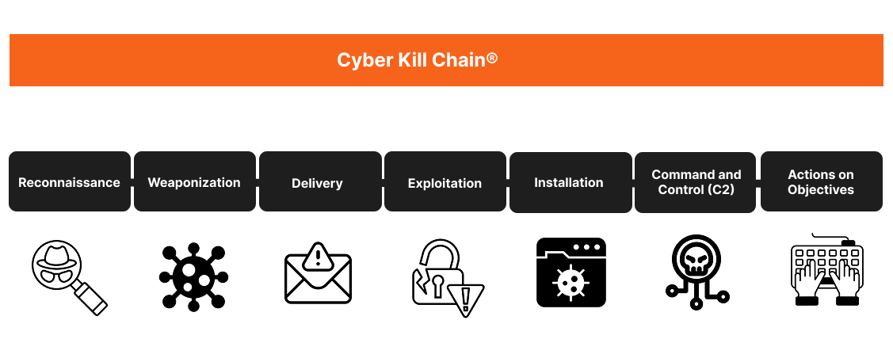

3. Threat Modelling
Think Like an Attacker
Master Threat Modeling
You've scanned the target. You've identified open ports, services, and OS
details. Now comes the fun part: thinking like the enemy.
This phase is called threat modeling. It's all about asking questions
like:
- Who might attack this system?
- What are they after?
- How would they get in?
By stepping into the attacker's shoes, you can focus your efforts on the risks
that matter most.
The Cyber Kill Chain: A Map of the Attack
One beginner-friendly way to model threats is the Cyber Kill Chain,
developed by Lockheed Martin. It breaks a cyberattack into 7 logical stages —
from initial recon to final impact.
Learn more from Lockheed Martin
Here's a quick breakdown of what the Cyber Kill Chain includes:
- Reconnaissance: Gathering info (like you did with Nmap).
- Weaponization: Crafting an exploit, malware, or phishing kit.
- Delivery: Sending the payload via email, link, or website.
-
Exploitation: Triggering the exploit — for example, using a known
vulnerability.
- Installation: Installing malware for persistent access.
-
Command and Control (C2): Gaining remote control of the system.
-
Actions on Objectives: Stealing data, damaging systems, or causing
disruption.

Why It Matters
The kill chain helps defenders identify where to intervene. For example:
- Can you detect early reconnaissance attempts?
- Can you block malicious payloads during delivery?
- Can you monitor and stop C2 traffic?
Even if you're just training,
thinking like a real attacker sharpens your skills as an ethical hacker.
Build Your First Threat Model
Based on what you've discovered so far, you're ready to sketch a simple threat
model for the target system.
Let's review your earlier findings:
- Open ports: SSH (22), HTTP (80)
- Web server: WordPress
- OS: Linux-based
Now ask yourself:
- What would a real attacker try to achieve?
- Where are the likely weak spots?
- Which tools or exploits might work here?
Try to imagine how an attacker would move step-by-step through the kill chain
toward their objective.
🛡️ Simple Threat Model: 192.168.30.6
-
Target: Linux server running Apache and WordPress, SSH enabled
- Open Ports: 22 (SSH), 80 (HTTP)
-
Potential Threats:
- Weak SSH credentials
- WordPress vulnerabilities
- Information disclosure via HTTP (e.g., /wp-admin)
-
Attacker's View: High visibility, common entry points, easy recon
-
Possible Next Steps:
- Run wpscan to check WordPress issues
- Use nikto to look for web server vulnerabilities
- Attempt SSH login if credentials are weak or known
-
Potential Attackers:
- Amateur hackers looking for low-hanging fruit
-
Hacktivists targeting cultural institutions or public visibility
-
Automated bots scanning for known WordPress or SSH vulnerabilities
-
Attacker Motivation:
- Changing the site's appearance as a form of protest or activism
- Using server as part of a botnet
- Stealing sensitive data (visitor info, login credentials)
Don't Aim for Perfect — Aim for Progress
This is just a starting point. Your threat model doesn't need to be perfect —
what matters is that you're practicing a new way of thinking. You're
connecting what you've scanned to how someone might exploit it. That mindset
shift is what makes you dangerous — in a good way.
In fact, threat modeling is often one of the most time-consuming parts of
penetration testing — and right now, we're only scratching the surface.
Ready? Time to move from theory to testing.